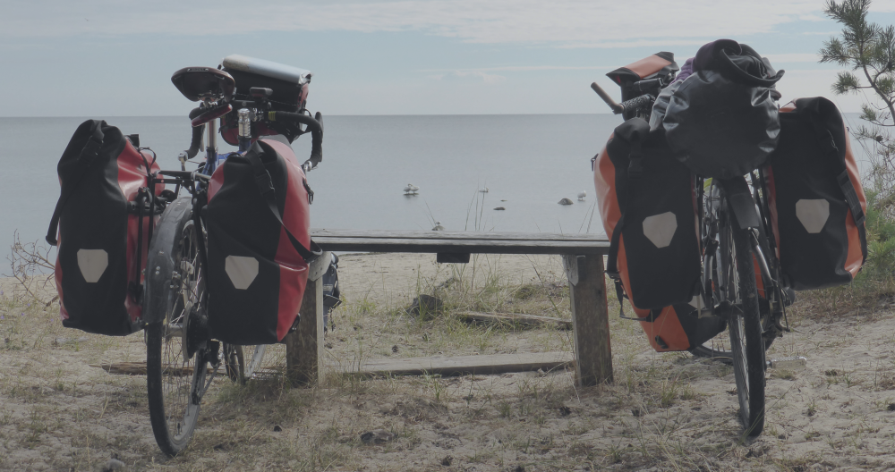

<section id="home">
  <div class="container">
    <div class="row border">
      <div class="col-md-12">
        
        <div id="home-slider" class="block slider">
          
          <div class="centered">
            <h1 class="text-uppercase">Will they really?</h1>
            <br>
            <h4>We strongly believe so, provided we start using them more often!</h4>
          </div>
        </div>
        <!--This code below is valid only for very small screens-->
        <div class="slider-below block">
          <h1 class="text-uppercase center-block" style="color:#E4B363;">Will they really?</h1>

          <h4 class="center-block" style="color:#E4B363;">We strongly believe so, provided we start using them more often!</h4>
        </div>

        <div id="home-text" class="block">
          <p class="center-block">Over the years, we have grown more and more dependent on private cars, and even flights, to accomplish a multitude of tasks in our everyday life. But our transport choices come with consequences, which are dramatically affecting us and our planet. </p>
          <br>
          <p class="center-block">At present the world is about <a class="green" target="_blank" href="https://en.wikipedia.org/wiki/Instrumental_temperature_record">1 °C hotter than pre-industrial times</a>, and at the current rate of emissions global warming will  rise to <a class="green" target="_blank" href="https://www.ipcc.ch/site/assets/uploads/sites/2/2019/06/SR15_Headline-statements.pdf">1.5 °C between 2030 and 2052</a>. In its <a class="green" target="_blank" href="https://www.ipcc.ch/sr15/">latest report on global warming</a>, the Intergovernmental Panel on Climate Change (IPCC) has warned how exceeding this already dangerous level of global warming would translate into higher risks of extreme heat, droughts, floods, and poverty for hundreds of millions of people. In order to avoid a catastrophe, immediate global efforts are required to <a class="green" target="_blank" href="https://www.ipcc.ch/site/assets/uploads/sites/2/2019/06/SR15_Headline-statements.pdf">reduce greenhouse gas emissions by 45% by 2030, reaching net zero by 2050</a>.</p>
          <br>
          <p class="center-block">Within the EU the transport sector is currently responsible for a large share of greenhouse gas emissions and is thus a major contributor to climate change. While most other economic sectors, such as power production and industry, have reduced their emissions since 1990, <a class="green" target="_blank" href="https://www.eea.europa.eu/themes/transport/intro">those from transport have in fact risen</a>. In the UK transport now represents <a class="green" target="_blank" href="https://assets.publishing.service.gov.uk/government/uploads/system/uploads/attachment_data/file/776083/2017_Final_emissions_statistics_one_page_summary.pdf">the single largest contributor to the total greenhouse gas emissions</a>. Globally speaking, the carbon footprint of the car industry alone contributed <a class="green" target="_blank" href="https://www.greenpeace.de/sites/www.greenpeace.de/files/publications/gp_cleanairnow_carindustryreport_full_v5_0919_72ppi_0.pdf">9% to the total annual greenhouse gas emissions for the year 2018</a>. It was also recently reported that the growing worldwide demand for SUVs has been the <a class="green" target="_blank" href="https://www.iea.org/commentaries/growing-preference-for-suvs-challenges-emissions-reductions-in-passenger-car-market">second biggest cause of the increase in global emissions from 2010 to 2018</a>.</p>
          <br>
          <p class="center-block">Transport also continues to be a significant source of air pollution, especially in urban environments. Air pollution is responsible for <a class="green" target="_blank" href="https://www.thelancet.com/journals/lancet/article/PIIS0140-6736(17)32345-0/fulltext">millions of premature deaths worldwide</a>. The results of a recent global survey indicate that, on average, <a class="green" target="_blank" href="https://academic.oup.com/cardiovascres/advance-article/doi/10.1093/cvr/cvaa025/5770885">air pollution cuts almost three years from human life expectancy</a>. Car exhausts are also known to be a serious threat to children's health, making them particularly at risk of developing <a class="green" target="_blank" href="https://www.thelancet.com/journals/lanpla/article/PIIS2542-5196(19)30046-4/fulltext">asthma</a> and <a class="green" target="_blank" href="https://www.thelancet.com/journals/lanpub/article/PIIS2468-2667(18)30202-0/fulltext">stunted lungs</a>. Furthermore, climate change and air pollution are both critical factors in driving the <a class="green" target="_blank" href="https://www.ipbes.net/news/Media-Release-Global-Assessment">decline of ecosystems and biodiversity</a> that we are experiencing.</p>
          <br>
          <h3 class="center-block text-uppercase">But we can stop all this by taking immediate action</h3>
          <br>
          <p class="center-block">While deep transformative changes in our societies should be sought at a global level, the political inertia towards the emergency we are facing doesn't leave us much choice: action must come from us, the poeple. We all have opportunities to make an individual impact and shift our lifestyles towards cleaner transport alternatives.</p>
          <br>
          <p class="center-block">Cars can be useful and even essential for some of us, but <a class="green" target="_blank" href="http://www.euro.who.int/en/health-topics/environment-and-health/Transport-and-health/data-and-statistics/physical-activity2">50% of all car journeys within the EU cover less than 5 km</a> and many of these could be undertaken on bike or foot.</p> 
          <br>
          <p class="center-block">Bicycles provide a simple and effective means of transport which is intrinsically clean, cheap, and comes with <a class="green" target="_blank" href="https://www.bmj.com/content/357/bmj.j1456">a whole host of health benefits</a>. Furthermore, with the increasing efficiency of electric and cargo bikes, the accessibility and versatility of cycling has never been greater. We really do believe that bicycles will save the world!</p>
        </div>

        <!--This code below is valid only for very small screens-->
        <div class="slider-below block">
          <h1 class="text-uppercase center-block" style="color:#E4B363;">So, what are we waiting for?</h1>
            <br>
            <h4 class="center-block" style="color:#E4B363;">Take action now and <a class="yellow" target="_blank" href="pledge.html"><b>sign our pledge!</b></a></h4>
        </div>

        <div id="home-message" class="block slider">
          
          <div class="centered">
            <h1 class="text-uppercase">So, what are we waiting for?</h1>
            <br>
            <h4>Take action now and <a class="white" target="_blank" href="pledge.html"><b>sign our pledge!</b></a></h4>
          </div>
        </div>
      
      </div>    
    </div>
  </div>
</section>
 
 


   